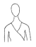
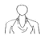
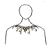

패션머천다이징산업기사 (2006-03-05 기출문제)
1과목: 패션마케팅
1. 다음 중 시장세분화의 전제조건이 아닌 것은?
- 세분시장이 다른 시장과 질적으로 다를 경우
- 세분화된 개별 시장 내에 동질적인 사람들이 많을 경우
- 세분시장이 작을 경우
- 세분시장에 대해 기업의 접근이 가능한 경우
(정답률: 알수없음)

2. 패션산업이 발달할수록 여러 가지 정보는 패션예측에 더욱 더 중요시되고 있다. 다음 중 패션마케팅 환경정보에 속하지 않는 것은?
- 국내외 정치, 경제, 사회, 문화 정보
- 인구, 소득, 소비구조, 라이프 스타일 및 의식구조 정보
- 패션정보지, 패션잡지, 신문
- 소득수준의 변화
(정답률: 알수없음)
3. 고급 상표를 열망하지만 가격에 민감한 소비자를 대상으로 디자이너 상표보다 저렴한 가격대로 디자이너 이름을 알리는 상표를 무엇이라고 하는가?
- 내셔널 상표(national brand)
- 브릿지라인 상표(bridge line brand)
- 중간상 상표(private brand)
- 라이센스 상표(license brand)
(정답률: 알수없음)
4. 에패럴 머찬다이저의 업무 중 판매 및 판매촉진지원 업무에 해당하는 것은?
- 기업환경정보 분석
- 전시회 계획 및 수주회
- 생산의뢰 계획
- 제조 계획
(정답률: 알수없음)
5. 상품기획 부분의 스페셜리스트가 아닌 것은?
- 패션 머천다이저(fashion merchandiser)
- 패션 어드바이저(fashion adviser)
- 패션 디자이너(fashion designer)
- 패션 일러스트레이터(fashion illustrator)
(정답률: 알수없음)
6. 의류업계의 자체생산과 하청생산의 장 ㆍ 단점을 설명한 것 중 적절하지 않은 것은?
- 자체생산의 경우 품질관리와 검사가 용이하다.
- 자체생산의 경우 기계설비와 운영비 등 고정비용이 많이 든다.
- 자체생산의 경우 생산량을 수요에 따라 유연하게 조절할 수 있다.
- 하청생산의 경우 본사와 아웃소싱 업체간의 커뮤니케이션 문제가 발생할 수 있다.
(정답률: 알수없음)
7. 소비자가 정보수집을 위하여 비교적 적은 시간과 노력을 투입 하여 문제해결을 하는 것으로 제품에 대한 소비자의 관여도가 낮거나 지식이 어느 정도 있는 경우에 이러한 문제해결 과정을 거치는 것은?
- 포괄적 구매의사 결정
- 충동적 구매의사 결정
- 관성적 구매의사 결정
- 제한적 구매의사 결정
(정답률: 알수없음)
8. C.I(Corporate Identity)의 기본요소로 가장 먼 것은?
- 기업명
- 심벌마크
- 로고타입
- 인적판매
(정답률: 알수없음)
9. 오늘날 마케팅의 초점은?
- 기술혁신 향상
- 생산성 향상
- 판매증가
- 고객욕구 만족
(정답률: 알수없음)
10. 패션 바이어의 직무 범위에 포함되지 않는 것은?
- 신상품 시장 진출의 정보수집과 분석
- 디자인 컨셉 설정
- 판매 담당자에 대한 상품 교육
- 소매점 수준에서 잘 팔릴 상품 구입
(정답률: 알수없음)
11. 패션상품의 판매에서 리테일 머천다이징이 특히 중요시 되는 이유가 아닌 것은?
- 패션상품은 시한성이 낮기 때문이다.
- 패션상품은 가격할인률이 높기 때문이다.
- 패션상품은 상품의 회전율이 빠르기 때문이다.
- 패션상품은 계절의 변화에 영향을 받기 때문이다.
(정답률: 알수없음)
12. 구매 후 소비자불평 행동 중 공적행동에 속하지 않는 것은?
- 회사에 직접 배상 요구
- 구매 중지 및 구매 보이코트
- 민간단체에 불평
- 배상을 위한 법적 조치 취함
(정답률: 알수없음)
13. 손익분기점(Break even point)의 의미는?
- 손익이 0이 되는 점의 매출액
- 매출이 일어나는 점
- 목표이익을 넘어가는 점의 매출액
- 고정비를 넘어가는 점의 매출액
(정답률: 알수없음)
14. 마케팅 믹스의 4P's 요소를 모두 포함하여 설명한 것으로 옳은 것은?
- 디자인 개발, 유통, 제품, 촉진
- 제품, 가격, 인적판매, 촉진
- 촉진, 디자인 개발, 유통, 제품믹스
- 제품, 촉진, 가격, 유통
(정답률: 알수없음)
15. 패션 기업이나 패션 기업의 마케팅 활동이 가장 미래지향적인 것은?
- 시장주도형(market-driving) 기업
- 시장추종형(market-driven) 기업
- 반응형(responsive) 마케팅
- 예견형(anticipative) 마케팅
(정답률: 알수없음)
16. 윙케이트(J.W.wingate)의 상품구성이론에 따른 상품구성 설명이 바르게 짝지워진 것은?
- 기본상품 : 유행성이 강하지 않은 저가격 상품
- 기본상품 : 판매촉진을 위한 저가격 상품
- 기본상품 : 재고처리 상품
- 기본상품 : 점격 향상을 위한 상품
(정답률: 알수없음)
17. 패션 머천다이저에게 요구되는 자질과 거리가 먼 것은?
- 적극적인 행동력과 세련된 감각
- 생산 기술력과 디자인 개발 능력
- 정보 분석능력과 마케팅 능력
- 논리적인 사고 및 표현 능력
(정답률: 알수없음)
18. 패션마케팅의 주요개념에 대한 성멸 중 틀린 것은?
- 수요(demand)는 욕구가 구매력과 구매의지에 의하여 뒷받침 된 것을 말한다.
- 고객만족(satisfaction)은 제품에 대해 고객이 기대하는 효능에 좌우된다.
- 고객가치(value)란 고객이 그 제품을 소유하고 사용하여 획득한 가치와 그 제품을 획득하는데 소용되는 비용간의 차이이다.
- 교환(exchange)이란 교환 당사자 간 가치의 매매를 의미하며 이는 마케팅에 대한 특정수준이다.
(정답률: 알수없음)
19. 관여의 정도가 낮고 습관적으로 구매하며, 상표간 차이가 별로 없을 때 일어나는 구매 행동은?
- 상표 충성적 구매
- 다양성 추구
- 관성적 반복 구매
- 고관여 구매
(정답률: 알수없음)
20. 패션 소매상의 측면에서 본 위탁판매제도의 장점은?
- 상권특성에 따른 불량배분으로 판매를 극대화할 수 있다.
- 재고에 대한 부담이 적다.
- 사입 및 판매 능력 따라 매출극대화가 가능하다.
- 마진이 높아 대리점의 수익을 높일 수 있다.
(정답률: 알수없음)
2과목: 패션소재기획
21. 다음 중 다림질 온도가 200?정도에서도 가장 손상을 입지 않는 섬유는?
- 스판덱스(spandex)
- 면(cotton)
- 견(silk)
- 폴리에스테르(polyester)
(정답률: 알수없음)
22. 머어서화 가공(mercerization)에 대한 설명으로 적절하지 못한 것은?
- 면 섬유의 단면이 원형으로 되고 투명도가 증가한다.
- 면직물의 광택, 염색성, 치수안정성을 향상시켜 고급 의류용 으로 사용된다.
- 면섬유를 셀룰라아제 효소로 처리하는 가공법이다.
- 긴장 하에 처리하면 광택이 좋아져 실켓가공이라고도 한다.
(정답률: 알수없음)
23. 견(silk)섬유에 대한 설명으로 맞지 않는 것은?
- 생사를 정련할 때 세리신을 완전히 제거하지 않는 것이 강도를 유지하기가 좋다.
- 내일광성은 증량견이 가장 좋고, 정련견, 생견의 순으로 나빠 진다.
- 춘잠이 차잠보다 품질이 우수하고, 가잠견이 야잠견보다 품질이 우수하다.
- 증량견은 견의 무게의 40%정도까지 금속염을 고착하여 무게를 증가시킬 수 있다.
(정답률: 알수없음)
24. 다음 블라우스 소재로 가장 부적합 한 것은?
- 조젯(Georgette)
- 시폰(Chiffon)
- 홈스펀(Homespun)
- 보일(Voile)
(정답률: 알수없음)
25. 다음 직물용어 중 맞지 않는 것은?
- 직물의 단위면적당의 무게를 중량(weight)이라고 한다.
- 직물의 폭(width)은 모두 일정하며 폭의 표시는 인치(inch)로 나타낸다.
- 밀도(density)는 일반적으로 경사와 위사의 2.54cm(1inch)당 실의 가닥수를 나타낸다.
- 직물 양측에 1/2인치 정도의 폭으로 조금 단단한 부분을 변(selvage)이라 한다.
(정답률: 알수없음)
26. 드라이클리닝이 권장되는 섬유가 아닌 것은?
- 아세테이트
- 폴리에스테르
- 견
- 모
(정답률: 알수없음)
27. 한 종류의 실을 2가닥 이상 합치어 꼬아서 다시 한 가닥으로 만든 실의 명칭은?
- 순사
- 합연사
- 교연사
- 혼방사
(정답률: 알수없음)
28. 인조섬유의 광택과 촉감을 개선하기 위하여 특수한 형태의 단면을 갖도록 설계된 인조섬유는?
- 이성분 섬유
- 이형단면 섬유
- 무광택 섬유
- 극세 섬유
(정답률: 알수없음)
29. 다음 중 내일광성이 가장 우수한 섬유는?
- 아크릴
- 견
- 나일론
- 면
(정답률: 알수없음)
30. 나일론(nylon)에 대한 특성으로 옳지 못한 것은?
- 내구성이 매우 우수하다.
- 초기탄성률이 155~260g/d 정도로 매우 크다.
- 탄성회복률이 매우 우수하다.
- 열가소성이 매우 좋다.
(정답률: 알수없음)
31. 면 섬유에 대한 설명으로 맞지 않는 것은?
- 표피층은 섬유가 자외선과 산소에 의하여 산화되는 것을 방지해 준다.
- 제2차막은 여러 피브릴(fibril)층이 섬유길이 방향과 70°각을 이루며 접착하고 있다.
- 짙은 수산화나트륨(NaOH) 용액으로 처리하면 천연 꼬임이 사라지고 투명도가 증가한다.
- 수지 가공된 면직물은 염소계 표백제를 사용하면 변색되거나 변질될 수 있다.
(정답률: 알수없음)
32. 소재를 사선방향으로 사용하면 탄성과 유연성이 얻어진다는 역학적 특성을 발견하고 바이어스 컷(Bias-Cut)을 발견한 디자이너는?
- 샤넬(Chanel)
- 프라다(Prada)
- 마들렌 비요네(Madeleine Vionnet)
- 파코라반(Paco Rabanne)
(정답률: 알수없음)
33. 트리아세테이트의 특징으로 맞는 것은?
- 축융성이 있어 세탁에 의해 쉽게 수축한다.
- 내구성이 우수하여 작업복, 청바지의 재료로 쓰인다.
- 열가소성이 우수하므로 주름치마 등을 만들 수 있다.
- 원료가 한정적으로 재배 및 생산과정에서 많은 노동을 필요로 하므로 비교적 고가이다.
(정답률: 알수없음)
34. 최근 패션 소재에 대한 일반적인 요구 특성이 아닌 것은?
- 민족주의, 국가주의에 대한 관심
- 자연으로 회귀하고 싶은 욕망
- 편리하면서 쾌적한 여가 생활
- 인간의 본질적인 욕구인 아름다움에 대한 관심
(정답률: 알수없음)
35. 다음 중에서 필라멘트(filament fiber)에 속하는 것은?
- 아마(flax)
- 양모(wool)
- 견(silk)
- 케이폭(kapok)
(정답률: 알수없음)
36. 경사와 위사에 60번수 정도의 소모사를 사용하고 조직은 평직으로 짠 얇은 모직물로 주로 여름 옷감으로 사용하는 직물은?
- 트위드(tweed)
- 트로피컬(tropical)
- 홈스펀(homespun)
- 드릴(drill)
(정답률: 알수없음)
37. 소재기획의 중요한 정보원으로 인식되고 있는 소재 거래선의 선정조건으로 적합하지 않는 것은?
- 소재상품의 생산설비 유무 관계
- 소재상품에 대한 기술력과 개발력
- 소재상품에 대한 풍부한 견본제시 능력
- 소재상품에 대한 정확한 컨셉
(정답률: 알수없음)
38. 패션 소재 기획에서 소재의 선정 조건에 대한 설명 중 틀린 것은?
- 최고의 감성을 위해서는 소재의 가격은 문제되지 않는다.
- 소재 디자인과 스타일과의 관계를 파악해야한다.
- 생산 납기, 수량 등 유통 부분에 대한 고려가 있어야 한다.
- 섬유의 종류와 성능에 대한 기술적인 지식이 토대가 되어야한다.
(정답률: 알수없음)
39. 알칼리(Alkali) 감량가공을 통하여 실크 같은 촉감을 주는 소재로 일명 물실크(washable silk)로 통하는 소재의 섬유명은?
- 비스코스레이온(Viscoserayon)
- 폴리아마드(Polyamide)
- 폴리에스테르(Polyester)
- 폴리아크릴(PolyAcrylic)
(정답률: 알수없음)
40. 다음중에서 투습 발수의 기능을 가진 등산복소재로 가장 적합한 것은?
- 면 스판 직물(Cotton Spandex Fabrics)
- 편성물
- 고어택스(Gore-Tex)
- 인조 스웨이드(Suede)
(정답률: 알수없음)
3과목: 유통관리 및 광고
41. 1990년대 후반 동대문과 상권의 소규모 의류 소매점들이 밀리오레, 두산타워와 같은 거대한 유통구조로 수평적 계열화를 이루었다. 이를 통해 창출되었던 시너지 효과로 간주 될 수 없는 것은?
- 수평적 네트워크를 형성함으로써 기업이 단독적인 유통경로를 할 수 있다.
- 마케팅 활동에 필요한 자본의 부족을 상호보완 할 수 있었다.
- 다양한 마케팅 전략을 효과적으로 공유할 수 있었다.
- 소규모 중소기업들이 새로운 시장기회를 개발할 수 있었다.
(정답률: 알수없음)
42. 제품믹스 전략에 있어서 각 제품계열에 포함되는 품목의 총수를 의미하는 말은?
- 제품 믹스의 폭
- 제품 믹스의 높이
- 제품 믹스의 깊이
- 제품 믹스의 길이
(정답률: 알수없음)
43. 비주얼 머천다이징의 의미를 잘못 표현 한 것은?
- 비주얼 머천다이징은 점포이미지를 고려하여 통합적으로 관리한다.
- 비주얼 머천다이징은 광고, 판촉, 일관된 메시지를 전달한다.
- 비주얼 머천다이징은 꾸미기 위한 것이 목적이다.
- 비주얼 머천다이징은 디스플레이를 포함하는 개념이다.
(정답률: 알수없음)
44. 붉은 악마라는 국가대표 축구팀의 서포터들은 월드컵 경기를 통해 전세계에 대한민국 국가의 이미지를 널리 알렸다. 이러한 효과를 무엇이라고 하는가?
- 홍보 효과
- 광고 효과
- 마케팅 효과
- 시너지 효과
(정답률: 알수없음)
45. 매장의 이상적인 색채조절 효과가 아닌 것은?
- 매장을 밝고 기분 좋은 곳으로 만든다.
- 판매원들의 심신의 피로를 줄인다.
- 개성적인 매장으로 보이게 한다.
- 쇼핑시간을 단축시킨다.
(정답률: 알수없음)
46. 소매점에서 고객의 욕구를 만족시키기 위해서 소매점 자체의 리스크 부담으로 상품을 기획하고 제조, 판매하는 브랜드는?
- 내셔널 브랜드
- 프라이빗 브랜드
- 공동 브랜드
- 편집 브랜드
(정답률: 알수없음)
47. 제조업체로부터 사입하여 단순히 판매만 하는 소매기능에서 더 나아가 직접 디자인을 기획, 생산하는 제조기능까지 갖춘 소매상은?
- GMS
- SPA
- Category Killer
- Direct Mail
(정답률: 알수없음)
48. 소구 대상이 어느정도 명확하고, 감정적, 분위기적인 소구와 시가와 연동이 가능하므로 패션제품의 광고 매체로 가장 적당한 것은?
- TV
- 라디오
- 신문
- 잡지
(정답률: 알수없음)
49. 상품구성의 폭과 깊이에 대한 설명 중 틀린 것은?
- 상품구성의 폭은 소비자에게 제공하는 품목수를 의미하고, 깊이는 품목의 양을 의미한다.
- 소품종 다량구성은 폭이 좁고 깊은 구성이다.
- 소매점의 경우 상품구성의 폭은 구색을 갖추는 상품의 종류를 의미한다.
- 중류층을 대상으로 하는 점포는 시즌 초에는 좁고 깊은 상품 구성이 바람직하다.
(정답률: 알수없음)
50. 프랜차이즈 본부와 가맹점 사이의 계약에 의해 특정 상표의 제품만을 판매하는 점포형태는?
- 전문점
- 할인점
- 체인점
- 대리점
(정답률: 알수없음)
51. 달러컨트롤(Dollar control)과 유니트 컨트롤(Unit control)이 활용되는 관리영역은?
- 재고관리
- 가격관리
- 판촉관리
- 영업관리
(정답률: 알수없음)
52. 다음 중 광고의 기능이 아닌 것은?
- 수요조사의 기능
- 판로확보의 기능
- 소비자 교육의 기능
- 상품제시 기능
(정답률: 알수없음)
53. 디스플레이의 전개수단이 아닌 것은?
- 상품
- 쇼카드
- 배경
- 광고
(정답률: 알수없음)
54. 다음 중 상품구성에서 상품의 깊이(depth)를 결정하는 요소가 아닌 것은?
- 상품의 유효성
- 고객층
- 상품의 유행성
- 구매관습
(정답률: 알수없음)
55. 고급 패션전문점의 상품구성으로 옳은 것은?
- 소품종 다량구성
- 다품종 소량구성
- 소품종 소량구성
- 다품종 다량구성
(정답률: 알수없음)
56. 할인형 대규모 전문점으로 특정제품 계열에서 전문점과 같은 깊은 상품 구색을 갖추고 매우 저렴하게 판매하는 유통업태는?
- 할인점
- 팩토리 아웃렛
- 양판점
- 카테고리 킬러
(정답률: 알수없음)
57. 다음 중 머천다이저가 입안하는 예산항목에 해당되지 않는 것은?
- 아이템별 판매 예산
- 브랜드별 구매 및 재고 예산
- 지역별 광고 및 판촉 예산
- 정상 판매, 바겐세일 등 판매형태별 판매 예산
(정답률: 알수없음)
58. 다음의 영업기별 전략 중 연결이 잘못 된 것은?
- 도입기의 전략 적은 물량 전개
- 실매기의 전략 적정의 가격 중심으로 가격 제안
- 실매시의 전략 볼륨 전개
- 처리기의 전략 아이템 전략과 상품비축
(정답률: 알수없음)
59. 패션수용도에 의한 상품 분류 중 패션을 가장 빨리 받아들이는 전략적인 상품군을 의미하는 것은?
- 트렌드 상품
- 베이직 상품
- 뉴베이직 상품
- 프레스티지 상품
(정답률: 알수없음)
60. 광고의 4원칙과 거리가 먼 것은?
- A(attention) : 주의, 환기
- I(interest) : 흥미유발
- D(desire) : 욕망자극
- A(awareness) : 인지
(정답률: 알수없음)
4과목: 패션디자인론 및 의복구성학
61. 비대칭 균형의 설명으로 옳은 것은?
- 흥미를 주지 못해 세련미나 성숙미를 나타내기에는 부적합하다.
- 간접적이면서 미묘한 균형의 조화로움으로 아름답다.
- 공식적이고 의례적인 느낌이 강한 의상에 도움이 된다.
- 대칭을 이루지는 못하고, 시각적인 무게도 다르나 균형을 이루는 상태이다.
(정답률: 알수없음)
62. 포플린에 알맞은 재봉바늘과 봉사는?
- 9호 면 40's/3
- 11호 면 60's/3
- 11호 면 80's/3
- 14호 견 60D/3
(정답률: 알수없음)
63. 다음 중 인체 계측 시 계측 방법이 틀린 것은?
- 가슴둘레 : 유두점을 지나는 수평둘레이다.
- 엉덩이둘레 : 대퇴부의 가장 돌출된 점을 지나는 수평둘레
- 등길이 : 목뒤점부터 허리 둘레선까지의 길이이다.
- 밑위길이 : 피계측자를 의자에 앉히고 허리둘레선의 옆중심으로부터 의자 바닥까지 잰 둘레이다.
(정답률: 알수없음)
64. 다트 머니플레이션의활용에 의한 디자인이 아닌 것은?
- 여러 개의 플리츠(pleats)
- 요크와 셔링(york and shirring)
- 프린세스 라인(princess line)
- 프린징(fringing)
(정답률: 알수없음)
65. 채도가 6, 색상이 5R, 명도가 8인 색채에 대한 먼셀의 색채기호 표시방법으로 옳은 것은?
- 5R 8/6
- 8/6 5R
- 5R 6/8
- 6/8 5R
(정답률: 알수없음)
66. 의상디자인에서 사용된 선의 시각적 인상에 대한 설명 중 적합하지 않은 것은?
- 직선은 단순하고 딱딱한 남성적인 느낌을 준다.
- 곡선은 우아하고 유연하여 여성적인 느낌을 준다.
- 사선은 불안정하고 침착한 느낌으로 정장류에 주로 쓰인다.
- 수평선은 길이가 짧아 보이며 안정감을 느끼게 한다.
(정답률: 알수없음)
67. 그레이딩에 관한 설명이다. 잘못 된 것은?
- 입체재단이나 평면재단으로 만들어 낸 패턴을 기본으로 한다.
- 같은 체형 가운데 디자인의 느낌을 그대로 유지하면서 사이즈를 늘리고 줄이는 기술이다.
- 그레이딩을 한 패턴은 시간 노력의 간소화뿐만 아니라 인체 적합률도 이상적이다.
- 정확한 기본 패턴은 그레이딩 작업의 오차를 줄여주기 때문에 중요하다.
(정답률: 알수없음)
68. 유행전파이론 중 사회내의 특정 하위문화집단으로부터 새로운 패션이 시작되어 사회전반에 전파되는 현상을 설명하기에 적합한 이론은?
- 하향전파이론
- 수평전파이론
- 집합선택 이론
- 상향전파 이론
(정답률: 알수없음)
69. 하위 문화집단이 유행을 창조한 모델과 관련이 가장 먼 것은?
- 히피
- 에콜로지
- 펑크
- 힙합
(정답률: 알수없음)
70. 심지에 대한 설명 중 올바르지 않은 것은?
- 심지의 결 방향은 반드시 겉감과 같은 방향으로 재단하여야 한다.
- 심지는 의류 전체 또는 어느 한정된 부위의 보강이나 형태보존을 위해 사용한다.
- 접착심지의 경우 열을 가한 후 수축이 심하지 않아야 한다.
- 심지는 의류의 종류, 용도, 겉감 소재의 특성에 맞춰 선택한다.
(정답률: 알수없음)
71. 패션산업의 범주에 들어가지 않는 것은?
- 텍스타일 산업
- 어패럴 산업
- 파이버 산업
- 요식 산업
(정답률: 알수없음)
72. 상의 디테일 가운데 홀터를 표현한 것은?



(정답률: 알수없음)
73. Roger는 소비자가 새롭게 소개된 유향을 채택하기까지의과정을 5단계로 구분하였다. 그 과정이 올바른 것은?
- 흥미단계 → 인지단계 → 평가단계 → 시용단계 → 채택단계
- 인지단계 → 흥미단계 → 시용단계 → 평가단계 → 채택단계
- 흥미단계 → 인지단계 → 시용단계 → 평가단계 → 채택단계
- 인지단계 → 흥미단계 → 평가단계 → 시용단계 → 채택단계
(정답률: 알수없음)
74. 두꺼운 모직물이나 플레어가 많이 생기는 단에 가장 적합한 단처리 방법은?
- 점 박음질
- 상침
- 팔자뜨기
- 테이프대기
(정답률: 알수없음)
75. 원단이 제조원가 중에 차지하는 비중이 극히 크므로 원단의 효율적인 사용은 원가절감에 매우 중요하다. 따라서 패턴들을 원단 위에 가장 효율적으로 배치하는 작업으로 원단위에 패턴을 올 방향이나 무늬를 고려하여 배치하는 재단준비 작업은?
- 그레이딩(grading)
- 마킹(marking)
- 연단(spreading)
- 번들링(bunding)
(정답률: 알수없음)
76. 아우어 글래스 실루엣에 속하지 않는 것은?
- 프린레스 실루엣
- 크리놀린 실루엣
- 머메이드 실루엣
- 시프트 실루엣
(정답률: 알수없음)
77. 레이온, 폴리에스테르 직물의 다림질에 적합한 온도는?
- 190도 ~ 220도
- 180도 ~ 200도
- 160도 ~ 170도
- 120도 ~ 150도
(정답률: 알수없음)
78. 110cm 폭 옷감으로 긴 소매 슈트를 재단할 때 옷감량 계산법이 옳은 것은?
- 재킷길이 + 스커트길이 + 소매길이 + 시접(20~30)
- (재킷길이×2) + (스커트길이×2) + 시접(20~30)
- (재킷길이×2) + 스커트길이 + 소매길이 + 시접(20~30)
- (재킷길이×2) + (스커트길이×2) + 소매길이 + 시접(20~30)
(정답률: 알수없음)
79. 고대 비잔틴 복장의 달마티카에서 볼 수 있는 소매의 형태로서 길과 소매를 붙여 암홀을 크고 풍성하게 하여 소매 밑에 주름이 많이 잡히게 재단한 소매를 무엇이라 하는가?
- 돌만 슬리브(dalman sleeve)
- 래글런 슬리브(raglan sleeve)
- 윙 슬리브(wing sleeve)
- 만다린 슬리브(mandarin sleeve)
(정답률: 알수없음)
80. 다음 중 의복의 디테일(detail)선은 무엇인가?
- 브레이드
- 레이스
- 지퍼
- 포켓
(정답률: 알수없음)
5과목: 패션정보분석
81. 패션마케팅 활동에 있어 가장 기본적이고 필수적인 정보가 되는 것은?
- 소비자 정보
- 자사 매출실적 보고
- 경쟁상의 전략정보
- 사회문화의 변화 정보
(정답률: 알수없음)
82. 소비자 조사에 속하지 않는 것은?
- 경쟁브랜드 판매조사
- 구매패턴 조사
- 착용조사
- 라이프스타일 조사
(정답률: 알수없음)
83. 소재의 경향인 섬유의 종류, 조직상의 특성, 염색방법 등을 분석하기 위해 주로 사용하는 것은?
- 스와치 명(swatch name)
- 스와치 샘플(swatch sample)
- 디테일 샘플(detail sample)
- 디테일 명(detail name)
(정답률: 알수없음)
84. 다음 중 소비자에 대한 정보원이 아닌 것은?
- 상권에 대한 정보 조사
- 고객의 구매패턴 및 구매동기 조사
- 각 브랜드 별 고객의 라이프 스타일 분석
- 브랜드 인지도 선호 조사
(정답률: 알수없음)
85. 다음 중 정보(information)의 정의로 적합한 것은?
- 미관찰 상태로 일상현실에서 무질서하게 존재하고 있는 것들 이다.
- 관찰이나 실험에 의해 획득된 가공하기 전의 자료이다.
- 의사결정에 필요한 사실, 지식, 데이터들의 집합이다.
- 모든 자료를 통합, 분석, 재구조화 한 것이다.
(정답률: 알수없음)
86. 직조된 모습을 잘 보이게 하기 위하여 표면에 나와 있는 실을 자르거나 표면의 파일이나 기모를 가지런히 또는 조각효과를 주면서 자르는 기계공정은?
- 프린트 식모(Print Flocking)
- 알칼리 감량가공(Alkarli Treatment)
- 전모 가공(Shearing)
- 효소 감량가공(Enzyme Treatment)
(정답률: 알수없음)
87. 일반적인 정보수집과정을 바르게 나열한 것은?
- 수집목표설정 - 필요정보확정 - 정보원접근방법설정 - 관련 정보채집 - 필요정보선별정리
- 필요정보확정 - 정보원접근방법설정 - 수집목표설정 - 관련 정보채집 - 필요정보선별정리
- 수집목표설정 - 관련 정보채집 - 필요정보선별정리 - 필요정보확정 - 정보원접근방법설정
- 수집목표설정 - 관련 정보채집 - 필요정보확정 - 필요정보선별정리 - 정보원접근방법설정
(정답률: 알수없음)
88. 패션상품생산에 있어서 대량생산이 결정된 전체 스타일을 아이템별로 코디네이션 시켜가면서 한 계절의 상품을 일목요연하게 정리한 것은?
- 디자인 맵
- 스타일링 맵
- 아이템 맵
- 스와치 맵
(정답률: 알수없음)
89. 컬러 트렌드에는 유행할 색상의 톤(tone)이 포함된다. 다음에 제시된 톤들 중에서 명도와 채도가 모두 높은 톤은 무엇인가?
- Dark
- Bright
- Strong
- Deep
(정답률: 알수없음)
90. POS(Point-of Sales System)에 대한 설명으로 옳지 않은 것은?
- 바코드를 통해 인식된다.
- 점포의 상품정보, 매출, 반품, 재고 등의 즉각적인 파악이 가능하다.
- 제조시점 정보관리 시스템을 말한다.
- 상품의 가격, 스타일, 사이즈, 색상 등의 정보가 중앙 컴퓨터에 연결되어 있다.
(정답률: 알수없음)
91. 패션 트랜드 변화요인 중 다음은 어떤 요인에 대한 설명인? (종교, 예술, 지식, 도덕 등 학습되어 나타나는 것으로 패션 트랜드에 영향을 주는 요인)
- 사회적 요인
- 경제적 요인
- 정치적 요인
- 문화적 요인
(정답률: 알수없음)
92. 여러 독립변수를 이용해서 다른 한 변인이 어느 집단이나 항목에 속하게 될 것인가를 판별해 내는 분석 방법은?
- 인자분석법
- 군집분석법
- 컨조인트 분석법
- 판별분석법
(정답률: 알수없음)
93. 다음 중 정보의 분석 방법에 해당되지 않는 것은?
- 정보 요구의 분석
- 정보 분석요인의 전개
- 부분분석과 종합분석을 통한 최종적 결과 도출
- 정보원 접근 방법 설정
(정답률: 알수없음)
94. 패션 트렌드 정보 도입 활용에 대한 설명으로 부적절한 것은?
- 각종 패션쇼를 정보원으로 한다.
- 트랜드 정보지, 전문지 등을 활용한다.
- 소매원 판매원들이 제공하는 사소한 정보도 간과하면 안된다.
- 패션정보는 효용가치가 떨어져도 폐기하면 안된다.
(정답률: 알수없음)
95. 시장조사에 대한 설명이 옳지 않은 것은?
- 인기상품을 조사한다.
- 시장 입지조건을 조사한다.
- 시장 규모와 시장 구조를 조사한다.
- 추측조사를 원칙으로 한다.
(정답률: 알수없음)
96. 현대 패션 이미지 중 미니멀, 하이테크, 아방가르드 등의 공통적인 이미지는?
- 내추럴(natural) 이미지
- 모던(modern) 이미지
- 퓨처(future) 이미지
- 에스닉(ethnic) 이미지
(정답률: 알수없음)
97. 색채분석에 대하여 틀리게 말한 것은?
- 색상은 패션디자이너들이 자신의 아이디어를 표현하는 중요한 수단이다.
- 트랜드 색의 적용은 소비자의 착용색 분석과 경쟁사의 컬러분석 등이 적용되어야 하며, 현재 경향과 관련되므로 지난 수년간의 패션컬러경향은 중요하지 않다.
- 판매시즌의 24개월 전에 국제 유행색 협회에서 유행색을 예측, 제공한다.
- 색상경향에 대한 정보는 상품기획자와 디자이너들에게 중요한 지침이 된다.
(정답률: 알수없음)
98. 다음 중 광고비 지출이나 가격변동이 매출에 미치는 영향과 같은 두 개 이상의 변수들을 조사하는 유형을 무엇이라 하는가?
- 탐색조사
- 인과조사
- 기술조사
- 의견조사
(정답률: 알수없음)
99. 인기상품, 가격, 유동인구, 상권 등에 대한 정보조사는 어떤 정보에 해당되는가?
- 소매점 정보
- 경쟁사 정보
- 소비자 정보
- 트랜드 정보
(정답률: 알수없음)
100. 의복 착용시 고려되어야 할 요인이 아닌 것은?
- 착용자의 가족관계
- 착용자의 연령
- 착용자의 역할
- 착용자의 체형
(정답률: 알수없음)